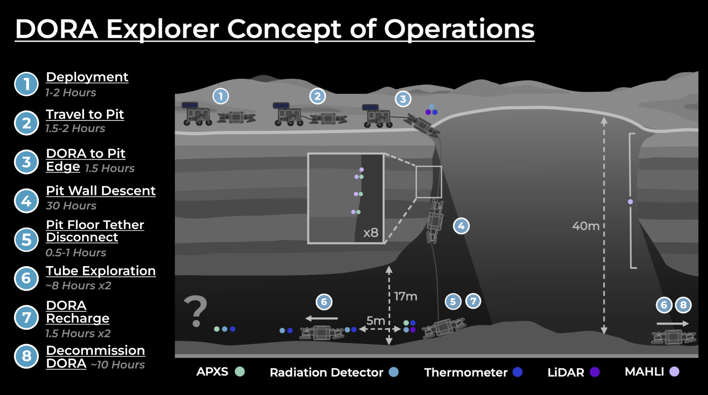

NASA L'SPACE MCA Twin Rover Mission
Core engineer contributing CAD layouts, payload design, and science-objective mapping for a dual-rover mission concept exploring lunar lava tubes.


I engineer resilient robotic and mechanical systems for lunar exploration — from deployable power stations to soft robotics, mission design, and regolith excavation technologies.
Redesigned and brought a deployable solar power station from early concept to field-ready hardware including CAD redesigns, fold-out mechanisms, and a complete electronics upgrade.
Core engineer contributing CAD layouts, payload design, and science-objective mapping for a dual-rover mission concept exploring lunar lava tubes.
Secured $10,000 NASA funding and led the cross-functional design of a soft-robotic lunar rover, integrating CAD, thermal simulations, electronics, autonomy, and actuator development.
Designed a 1.5 kg regolith depositor, validated with FEA, and 3D-printed optimized rover wheels. Contributed to SRR, PDR, and Proof-of-Life milestone submissions.